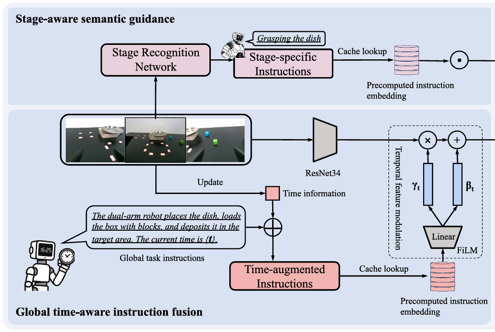
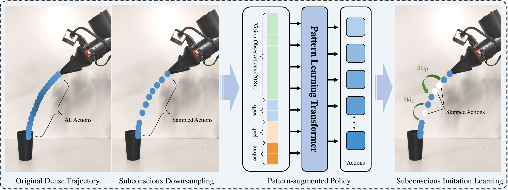
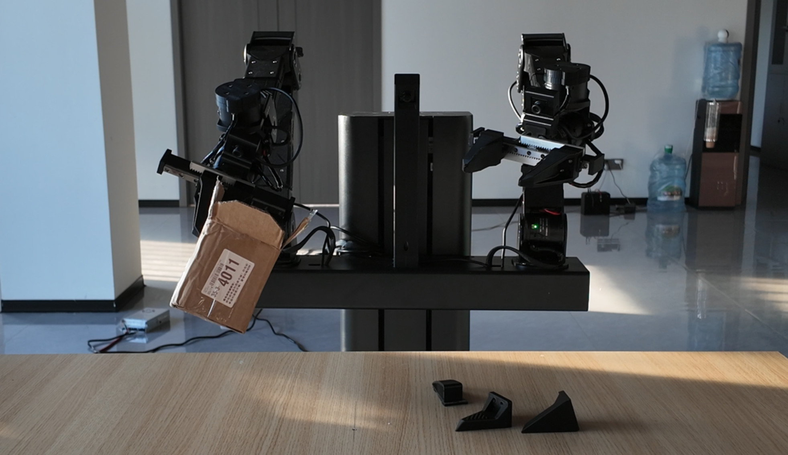
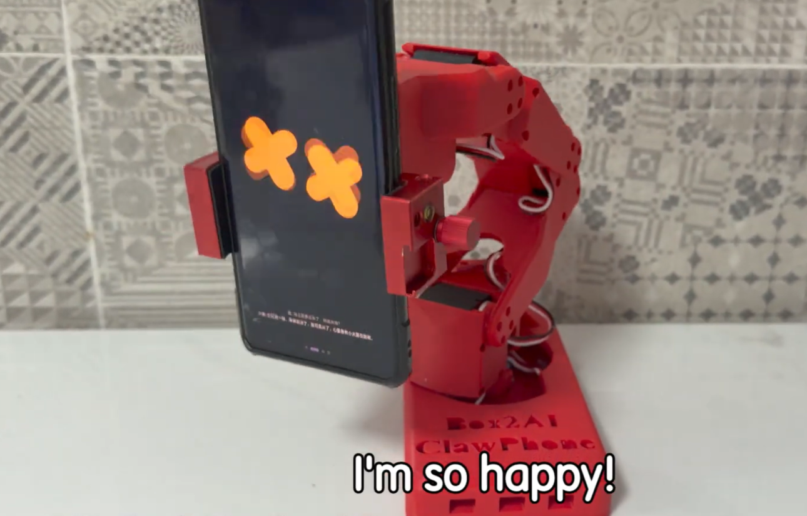
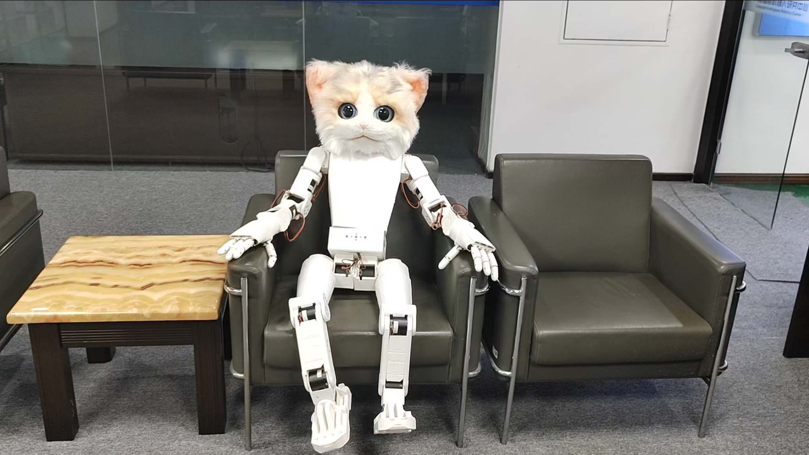
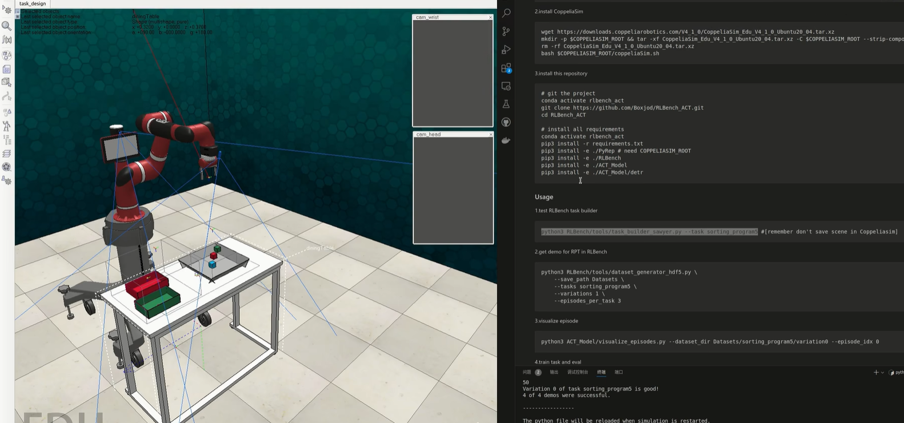
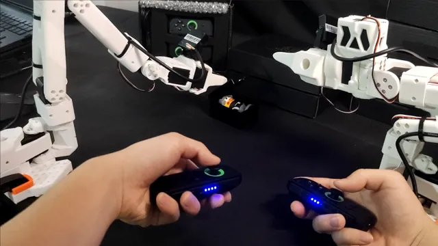

Jun Xie (谢俊)
Email / Academic CV / GitHub / Bilibili (盒子桥) / WeChat: boxjod
I'm a master's student in a joint training program between Northeastern University's Faculty of Robot Science and Engineering and Tianjin University's College of Artificial Intelligence. I founded Box2AI, an open-source community for embodied AI.
I built a chatbot in middle school. As a college freshman, I started building robots from scratch. I designed the mechanisms and circuit boards and wrote the embedded software. Today I work on agentic manipulation and humanoid loco-manipulation. How can a robot use what it sees and feels after one action to choose the next? How should a humanoid move its whole body as it handles an object?
I'd like to take a humanoid I've built on a high-speed train in China and buy it a ticket of its own.

Selected Publications and Manuscripts

LoopROS: A Deployable Recursive Self-Improvement Framework for Robotic Manipulation Based on Logical and Physical Constraints
Meilin Suo*, Jun Xie*, Junliang Zhang*, Huanxu Lin, Yangguang Sun, Zechen Bai, and XiaoGuang Ma
Under review at CVPR 2027.
Preprints / Blog

TSF-IL: Multimodal imitation learning with temporal-stage fusion
Jianwei Tan, Jun Xie, Huanxu Lin, Zhicheng Wang, and Xiaoguang Ma
Pattern Recognition Letters 209 (2026), 223–229.

Subconscious Robotic Imitation Learning
Jun Xie*, Zhicheng Wang*, Jianwei Tan, Huanxu Lin, Yang Jiang, and Xiaoguang Ma
ECAI 2025, Frontiers in Artificial Intelligence and Applications, vol. 413.

Constrained Behavior Cloning for Robotic Learning
Jun Xie*, Jianwei Tan*, Wensheng Liang, Zhicheng Wang, and Xiaoguang Ma
IEEE/RSJ International Conference on Intelligent Robots and Systems (IROS), 2025.
Selected Robotics Projects


LoopMaster
LoopMaster plans, executes and verifies tasks on the HEI ReBot Lift robot. It took first place overall at the Tanyue Physical AI Hackathon and later became the basis for LoopROS.

Box2Robot · April 2026
A custom driver board and wireless video link connect the robot to a cloud system for collecting demonstrations, training policies and running them on the robot.


ClawPhone · February 2026
OpenClaw runs on the phone and responds to voice commands such as “Open Maps.” The robotic mount reacts to the speaker's tone and follows their face during video calls.


BoxMan and BoxArm · July 2025
BoxMan is a doll-sized humanoid. BoxArm pairs a seven-axis arm with a dexterous hand that has eight degrees of freedom.

DengBot · March 2025
Inspired by Apple's ELEGNT prototype, this robotic desk lamp uses movement and posture to express emotion. It responds to visual feedback in real time and can perform simple tabletop tasks on a schedule.

RLBench-ACT · September 2024
I built RLBench-ACT as the simulation component of my undergraduate capstone project on autonomous robotic sorting. It generates sorting demonstrations in RLBench for training Action Chunking Transformer (ACT) policies.

joycon-robotics · January 2024
Operators can control more than 20 robot arms with Nintendo Joy-Con controllers. Related projects include lerobot-kinematics and lerobot-joycon.
Research and Professional Experience
Tianjin University · Tianjin, China
In the third year of my master's program at Northeastern University, I joined the Embodied Brain Lab in Tianjin University's College of Artificial Intelligence for joint research training under Professor Xiaoguang Ma (马晓光).
In July 2026, I helped design the undergraduate Embodied AI curriculum and served as a teaching assistant for its lab courses.
Chongqing Academy of Science and Technology · May 2025
Helped establish an embodied intelligence research center and guided work on embodied AI algorithms and humanoid robot development.
ARX · July 2024–March 2025
Joined the early team as an embodied AI intern and helped develop vision-language-action algorithms.
Midea Central Research Institute · January 2024
Wensheng Liang (梁文生) introduced me to the institute, where I took part in exploratory research on embodied AI algorithms.
DJI RoboMaster · July 2022
Competed in RoboMaster as a core team member and received an internship certificate during the on-site competition.
PawSwing · July–August 2021
As an intern, I helped produce mechanical components for an automatic cat grooming brush.